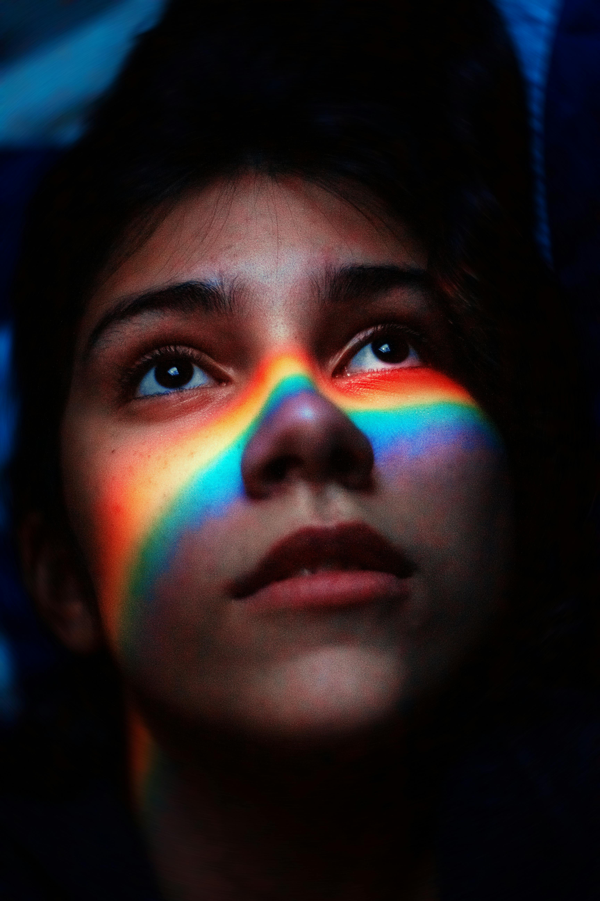

Exploring the Color Spectrum in Abstract Digital Art
Published on March 8, 2025 by Mark in Digital Art

Abstract digital art is a form of creative expression that uses shapes, colors, and forms—often without recognizable subjects—to evoke emotion and ideas. It leverages digital tools to push artistic boundaries.
Expressive potential:
Allows artists to convey mood, energy, and concepts without literal representation.
Encourages viewer interpretation and emotional response.
Color theory in use:
Artists apply warm colors (reds, oranges) to suggest passion or intensity, and cool colors (blues, greens) for calm or sadness.
Contrasts, harmonies, and saturation are used to create depth and focus.
🎨 Key idea: Abstract digital art, guided by color theory, is a powerful tool for emotional and conceptual expression in the digital age.
The Colorful World of Sustainable Fashion
Published on March 5, 2025 by James in Sustainable Living
Sustainable fashion focuses on reducing the environmental and social impact of clothing production. It promotes ethical labor practices, reduced waste, and environmentally friendly materials.
Importance:
Reduces pollution and waste from fast fashion.
Conserves natural resources.
Promotes fair wages and working conditions.
Eco-friendly materials:
Fabrics: Organic cotton, hemp, bamboo, and recycled fibers require less water and fewer chemicals.
Dyes: Natural dyes (from plants or minerals) are safer and biodegradable, unlike synthetic dyes that often pollute water sources.
🔁 Key idea: Sustainable fashion helps protect the planet while supporting ethical practices in the fashion industry
Celebrating the Colors of the World: A Journey Through Vibrant Cultures
Published on March 10, 2025 by Kiragu in Travel

Red: Symbol of luck in China, purity in India, and mourning in South Africa.
White: Stands for purity in the West, but mourning in many Asian cultures.
Black: Seen as elegance or grief in the West, maturity in Africa.
Blue: Represents protection in the Middle East, trust in the West, and divinity in India.
Green: Sacred in Islamic cultures, symbolizes nature and growth in the West.
Yellow: A color of royalty in China, joy in the West, but mourning in Egypt.
Purple: Linked to royalty in the West, but mourning in Brazil and Thailand.
🟡 Key point: Color meanings vary widely across cultures, so it's essential to understand these differences—especially in design, branding, and communication.